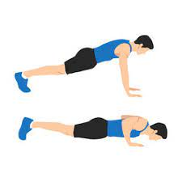
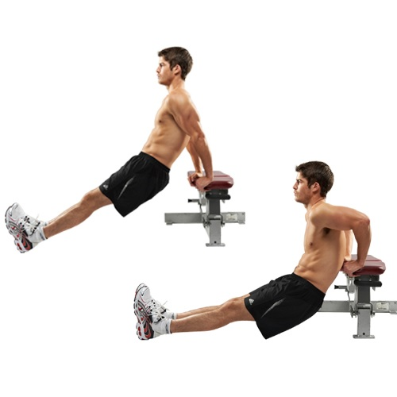

Vegan Pizzarolls

Tofu Mac N Cheese

The vegan diet is a diet based around the exclusion of animal products in your meals, including meats and dairy.
Vegan diets, if done properly, can drastically improve your overall health, including loss of weight and lower blood-sugar.
This being said, you must make sure to include proper amounts of vitamin D and B, iodine, iron, calcium, and zinc.
A lot of vegans find success with taking supplements while on the diet.
The Keto, or Ketogenic diet revolves around reducing your carbohydrate intake to almost nothing, and replacing that with fats in order to induce ketosis.
Ketosis is a metobolic state in which your body will use fat for fuel in place of carbohydrates.
Following a keto diet also has many health benefits, including lower blood pressure and weight loss.
This diet also helps with brain injuries, diabeties, heart disease, and epilepsy.
Push-up

Level: Beginner
Muscle groups: Chest, Arms
Description: Start with your body straight, and your chest touching the ground
Place hands directly under your shoulders.
Keep legs and back straight and push against the ground.
Once at the top, control your body back to the ground.
Click me for a video example!
Dips

Level: Beginner
Muscle groups: Arms
Description: Start under a bar, or something else to hold onto to.
Spread your arms slightly further than shoulder width apart.
Grip the bar overhanded.
Pull your body up.
Once at the top, control your body back down.
Click me for a video example!